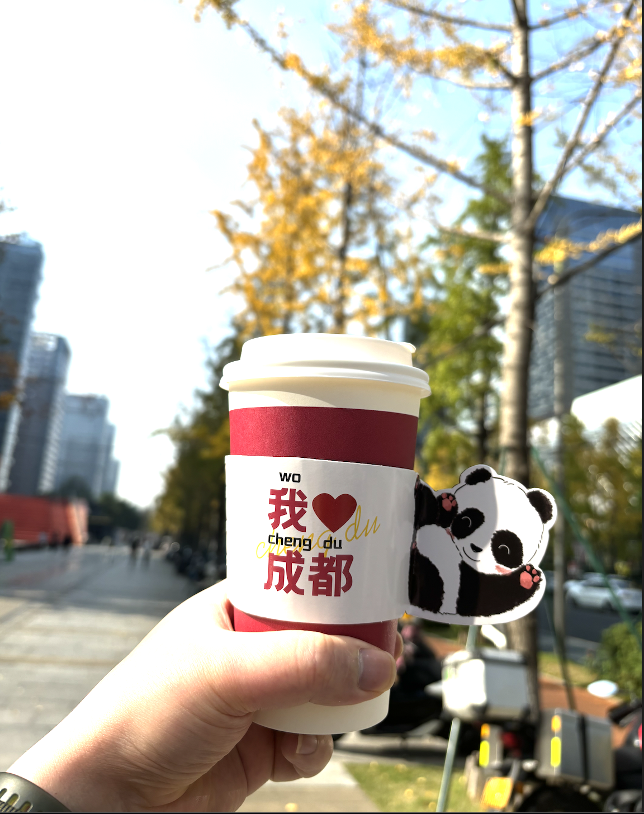

2024年回顾
对2024年度的总结与生活经历回顾

2024年回顾
2024 年这一年是我从时间维度上感觉过的最快的一年，有一种感觉还没有开始就结束了的感觉。
感觉工作和生活一依没有过好，生活还是苟且活着，像是混着日子又过了一天，若不是12月底了还没有反应过过来这一年已经过完了。
这不是2023年而是2024年结束。
在工作与生活上我还是没有找到一好的平衡点，我花费了很多时间去忙碌处理工作上的问题，我陷入管窥效应里面了，时间宽带资源被过度的占用，导致自己精神状态还是身体上都受到了影响大不如前。
我感觉最不舒服状态就是自己睡眠的时间不够，还有就是过度用眼后的视力疲劳看不清一切，走在外面街上看到的一切都是模糊的，像是这个世界你只能感觉三分之一，这样的感觉很不好。
我尝试去改善现状，但还是缺少了一些执行力没有严格自律给自己自由，无论是在身材管理还是学习成长上面。我意识到原子习惯的重要性。
不好积极的方面是我只是疲惫了但没有放弃去改变。不要对自己太苛刻，活着本身就很了不起了。大环境经济情况一年比一年差，也许直的今年是未来最好的一年的说法在未来是真的。
有时候我也会感觉有些焦虑，下半年睡的晚发现自己的头发没有以前那么黑了，有可能是肝细胞受损还有就是身体报出来安全信号，早上起床梳头的时候看到有几根白头发,看来真的是人到了中年慢慢的在向衰老。我希望一切是自然的规律符合天道，自然规律才是正常的生活方式。
有时候也想着自己的不容易没有人可以依靠生如野草，随风飘荡落地后开始早根生活。未来有太多的不却定性，一切都需要靠自己。
三十多年都过来了，我真应该自己安慰自己大多数时候包括未来都是自己一个人，只有自己才是最好的战友，从出生到死亡一真陪伴着，所以一定要对自己有信心，我永远有强大的内心坚实的后盾。有时候想像中很困难可真实经历后感概也不过如此嘛，不要把问题想像的太复杂了。
随着一年又一年的成长，从我很早一前就发现自己与别人的不同之处，像我这样的背景想结婚成家真的很难，在这个未法时代。基本的条件是需要有车、有房、有存款，我发现自己一条都不达标。
姑娘们在第一个条件上就把我给过滤掉了，如果你去想也是人生的一大痛苦。我在孝敬长辈上还是做的不错的，这么多年我年年都要在孝敬老人上花几万元钱。长辈们年纪大了经常生病每年都要在看病上花费我不少钱。
虽然有理财计划和清晰的规则，从月度年度上去支出数据，这一块也让我头大。后来我想清楚了我应该减少在这一方面的支出，在照顾好别人时先要照顾好自己，只有自己变的强大了才有能量去照顾别人，我几乎没有什么大的消费和尝试投资未来。
生活中能交集的朋友同事都已经结婚了，孩子都打酱油了。想想这几年时间黄花菜已经凉了，不是我不想把握机会。是根本就把握不住即使你想去追求但最后的结果不一定是好结果，第一定律大根据会因为物质被淘汰。
在自然生存法则中像动物一样只有强者才有“交配”权话虽糙，当你观察现代社会也会发现上些底层逻辑。所以顺其自然吧，如果时机成熟条件成熟自然知道自己该做什么事件，人也不牲口到了年龄就要去交配，在基因的脚度是合理的，但综合自然规律能做的只有尽量不要被淘汰，自己努力后无果可以安心对自己说我尽力了则已。
未来几年我可能会先买房子，面积只要够自己苟活就行了，位置在成都周边或者更远的地方，如果时机不成熟也许也会再租几年房。在40岁左右看能不能买一个属于自己的房子安度余生。
天伦之乐之个太遥远了，如果有幸能体验到当然更好，那要除非真正实现了阶级跃迁。有时候自己想买车但想了想如果自己买了车底气就没有了，没有足够的资本去对未来几年不决定性做打算。
还是那句话手有余粮心中不慌，我也不会给自己上大的杠杆。如果拥有100万那个时候腰杆是直的。
关于现在以及未来要持续做的事情还是持续学习，学好英文、好学好技术、锻炼好身体。让自己有视野走的更远，让生活更有价值和意义。我还需要多读点书建立起自己的核心价值观，这样我会更有能量。
工作方面通过我的观察和思考需要利用好 AI 技术，自己的知识范围专业领域需要 “system” 这样会更我省下不少时间，要评估付出和收益。
不要投入太多廉价的劳动到工作中，在自己没有实现财务自由的时候那就睡眠自由吧。我还想学习一些实用的生活技能在未来环境变的恶劣的时候做打算。
最后感悟生活确实是无聊又无趣的，如果不去创造有发现你就你发现没有能量和动力推动着你进行，核心还是原动力和核心价值，以此勉励自己继续勇敢的生活向前。
本博客所有文章除特别声明外，均采用 CC BY-SA 4.0 协议 ，转载请注明出处！